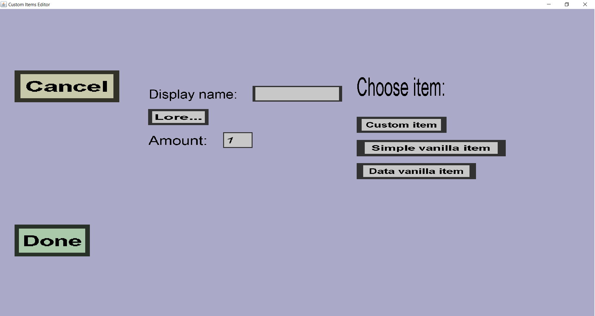

The slot display creation menu can be used to create/choose a 'slot display'. A slot display
consists of a display name, lore and a vanilla item or custom item. A slot display is much like
the name suggests: it is an in-game item that can't be picked up, but will be used to decorate
a slot in the inventory/menu of the custom container. This menu should look like this:

-
The 'Cancel' button will take you back to the menu you came from (this menu is used by a
lot of other menus) without choosing a slot display.
-
The 'Done' button will try to complete the creation and selection of the slot display.
If it succeeds, it will also take you back to the menu you came from.
-
The text edit field on the right of 'Display name:' can be used to choose the display name
for the item to be shown. This is much like renaming the item in the slot using an anvil
(but of course players can't just pick the item out of the menu).
-
Click the 'Lore...' button to change the lore of the item to display (some usually purple lines
of text below the item when you hover your mouse over it in-game). When you click this button,
it will take you to the text list edit menu.
-
The text edit field on the right of 'Amount:' can be used to change the amount/stacksize of
the item to display. Keeping it 1 will normally look best, but there might be moments where
using a bigger amount looks better. Note: this edit field is not visible for indicator
displays because indicators automatically change the stacksize depending on the progress.
-
Below 'Choose item:', there are 3 buttons, and you should click on 1 of them. These buttons
determine which item will actually be displayed. This can be a custom item or a vanilla item,
optionally with a data value (but not in mc 1.13 and later, because they were removed).
Note: since you can pick custom items (and you choose which textures custom items have), you
could even create a custom item for the sole purpose of using it as slot display. That
would make it possible for you to 'paint' inside your custom container.